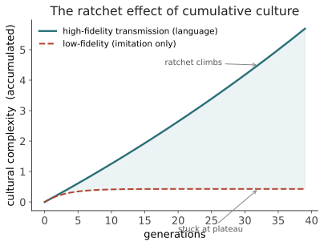

本页目录
文明 I · 文化演化与累积文化
对标：Tomasello《The Cultural Origins of Human Cognition》、Boyd & Richerson《Not by Genes Alone》、Henrich《The Secret of Our Success》、Christiansen & Chater《The Language Game》｜ 前置：ling-03（使用塑造结构）｜ 证据地位：累积文化【实】（实验 + 考古 + 比较认知），"语言是关键使能者"【实/争】（强因果归属有争议）。 线四离开机器与个体，走向群体与历史。这是丙问里可考据的那一半——不是思辨，是实验心理学、考古学、比较认知的硬证据。中心命题：语言最大的产物不是个体智能，而是让文化能够累积——文明是语言的沉积物。
1. 累积文化：人类独有的棘轮
把单个人扔进森林，他造不出智能手机、微积分、或一架飞机——这些不是任何个体重新发明的，而是无数代人的改进叠加的结果。这就是累积文化演化（cumulative cultural evolution），Tomasello 称之为棘轮效应（ratchet effect）：
每一代不仅忠实复制上一代的成果，还能在其上微小改进，且改进不倒退（棘轮只进不退）——于是复杂性跨代累加，远超任何个体一生能企及。
关键对照（这是【实】，有比较认知证据）：黑猩猩也有"文化"（不同群体用不同方式砸坚果），但它们的文化几乎不累积——几万年停在原地。人类文化在几千年里从石器爆炸到航天。差别不在个体聪明多少，而在传递的保真度与可改进性。

2. 为什么语言是关键使能者
累积需要高保真的社会传递。语言恰好提供了别的动物没有的几件东西：
- 离散化与组合性（承 ling-02）：把连续经验切成可精确复制的离散符号——"往左三步再挖"比模仿一串手势的保真度高得多。离散编码 = 高保真复制，这是信息论的老道理（数字 vs 模拟）。
- 脱离此时此地（displacement）：语言能谈论不在场的、过去的、假设的、抽象的东西——于是经验能跨时空传递，不必现场示范。
- 教学（pedagogy）：语言允许主动、显式地传授（"注意，火会烫"），而非只靠观察模仿——大幅提高传递效率与选择性。
Henrich 的论证：人类的生态成功，主要不是靠个体大脑的算力，而是靠集体大脑（collective brain）——一个能积累、储存、重组知识的社会网络。语言是这个集体大脑的通信协议。 这把导论的丙问（文明部分）落到一个可研究的机制上：语言 → 高保真传递 → 累积文化 → 文明。
3. 双重继承：基因与文化的共演化
Boyd & Richerson 的双重继承理论（dual inheritance）：人类同时通过基因和文化两条渠道继承信息，两者相互塑造（承轴 II 的"共演化"立场）。经典案例——
- 成人乳糖耐受：畜牧文化（喝奶）产生了对"消化乳糖"的选择压，几千年内改变了基因频率。文化实践反过来改写了基因。
- 语言—大脑共演化（Deacon，civ-02 详）：语言作为环境压力，可能选择了更适合语言的大脑；而更强的大脑又催生更复杂的语言——一个正反馈回路。
这对你研究的意义重大：它给了轴 II（语言↔思想）一个非二选一的答案模板。"语言塑造思想 vs 思想先于语言"也许都错——真相是共演化的反馈回路，问对的问题不是"谁先"，而是"这个回路的动力学是什么、在什么条件下失稳/加速"。把'先有鸡还是先有蛋'改写成'回路怎么转'，是本页给你的方法论升级。
4. 语言本身也在演化：作为文化产物
Christiansen & Chater 的翻转（《The Language Game》）：不只是"大脑演化以适应语言"，更是语言演化以适应大脑。语言是一种文化产物，它在人际传递中被选择——好学、好记、好用的语言特征被保留（接 ling-03 语法化、info-03 效率律）。
这解释了一个先天论难以解释的事实：语言习得之所以看起来"轻松到需要 UG"，也许是因为语言早已被几万年的文化演化"打磨成好学的样子"——不是大脑为语言准备好了，而是语言被塑造得适配大脑。 这是对刺激贫乏（ling-02）的一个釜底抽薪式回应：问题不在学习者多强，而在被学的东西已被优化得多好学。（当然，这仍是【争】——先天派会说打磨的方向本身受 UG 约束。）
5. 从个体智能到集体智能（转向 civ-03）
本页最该扭转的一个直觉：我们习惯把"智能"定位在单个大脑里。但累积文化提示：人类的很多"智能"根本不在任何单个头脑中——它分布在语言编码的、代际累积的、社会储存的知识网络里。
- 一个现代人"懂"的绝大部分（医学、法律、工程），是社会储存的，个体只是接口。
- 科学是一台分布式认知机器：没有哪个人懂全部，但系统整体能推进（civ-03）。
- 语言是这台机器的总线——它让分布式的知识可编码、可传输、可累积。
于是丙问（语言→文明）有了清晰形态：语言使一种超越个体的、分布式的、累积的智能成为可能。 这个"集体/分布式智能"是 civ-03 的主题，也是"语言促成智能"里最可考据、最少思辨的一支。
6. 要点与思考
思考 1（保真度是关键变量） 累积文化对传递保真度极其敏感（图 civ-1）：低于某阈值，损耗抵消改进，文化停滞；高于阈值，复杂度起飞。语言把保真度推过了阈值。 这给你一个可量化的抓手：用信息论度量"传递保真度"（一次传递丢失多少 bits），把"语言促成文明"变成阈值动力学问题——比空谈"语言很重要"实在得多。
思考 2（共演化模板可复用） 基因-文化、大脑-语言的共演化回路，是处理一切"A 促成 B 还是 B 促成 A"难题的模板。你的大问题（语言↔智能）就是这种回路。别找单向因果，找回路的稳定性、增益、临界点。（🔗 这也正是 Medusa 因果网里 cause/escalate/respond/resolve 的关系类型学——反馈回路的动力学。）
思考 3（做得动的·思想实验） labs 有一个非代码实验：设想一个失去了书写的文明（只剩口语），几代之后它能保住多少累积知识？——这是在用反事实探测"外部符号储存"对累积的贡献，直接通向 civ-02（识字）与 civ-03（分布式认知）。\(\blacksquare\)
下一页：文明 II——识字性与语言起源。如果口语让文化能累积，那么文字把累积推到了新量级：它是外部记忆，还反过来重写了大脑。我们也在这里正面碰语言的起源之谜——它是渐变的还是突现的？